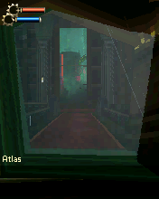

BioShock 3D was one of those “holy shit what did i find” games for me. Then we got it running and had a different question: why was this old phone game making my new phone work so hard?BS00BS14
The phone got hot.
“We've got heat issues pretty much immediately into gameplay. Help me figure out why. Current hardware absolutely shouldn't have any issues”Wakka · request preserved in the 0.1.5 heat findings BS14
The first investigation followed the interpreter and timer path. The original requested a two-millisecond timer near the end of its callback. The host subtracted all the work already spent in that callback from the newly requested delay, so the next callback was posted almost immediately. The later correction scheduled against the actual timer deadline.BS14BS15
We’d corrected a real timer bug, but the heat problem was still there. The 0.1.6 phone report records the battery rising from 29.0 to 35.9°C over roughly seven minutes. Even with detailed diagnostics off, the process averaged a little more than one core of CPU time across the sampled intervals. Logging wasn’t enough to explain it.BS18
We also had to walk back a promising performance result. The improvement around six percent didn’t reliably survive a cleaner comparison without the profiler. The final report kept that reversal instead of turning an uncertain difference into a dependable speedup.BS16
The 0.1.7 experiment made a stronger desktop result by executing batches of original ARM instructions in C++. Matched work used about forty percent less calling-thread CPU, with complete state and pixel comparisons alongside it. That measured efficiency for the same desktop workload; phone cooling still needed its own evidence.BS17
A fresh foundation.
Then we rebuilt it. For 0.2.0, we used the working Wolfenstein, Genesis, Doom and Contra family as the foundation and kept the earlier BioShock tree as a reference for native contracts and controls. We still had to understand what this original game expected.BS01
Even the size of the screen was a trap. The game requested a temporary 240×320 bitmap, but its main content was hardcoded around 176 pixels wide. Treating that allocation as the screen size left a footer far below the main picture. The selected 176×220 profile came from the content and footer layout, while explicit temporary bitmap requests retained their own dimensions.BS05

The original 176×220 world and HUD from the retained 0.2.0 desktop acceptance. This is original-game host output, not evidence of phone cooling.
Open the image for the full original view.
BS90Menu input had a quieter failure. Press set a last-key field; release replaced it with a sentinel. If a short touch ended before a native callback, the menu could lose the key it was supposed to see. Delaying release until one naturally due callback preserved the press without speeding the game up.BS04
World and menu keys also had different jobs. The game’s own control resource separated number keys for moving and turning from native arrows used elsewhere, with attack, crouch, use, weapon and plasmid actions all distinct. A generic FPS pad would have hidden that structure.BS03
Saving your place meant two things.
The rebuilt host reached the original playable world, moved and turned inside it, and followed the game’s own pause and save flow. Continue restored a checkpoint. The separate LOAD command restored the exact manually saved coordinates. Keeping those two behaviors distinct avoided promising a quick-save feature the original Continue never supplied.BS12
Later retained original-engine checks added simultaneous movement and turning, including both release orders. The 0.2.2 shell kept that engine and those assets, then changed the surrounding controls and utility behavior. A report export could complete while the real game worker was deliberately blocked.BS23BS20BS22
We didn’t get one tidy performance win and move on. We fixed a timer, withdrew a weak speedup claim, measured a stronger optimization on a specific desktop workload, and rebuilt the runtime. Meanwhile, BioShock kept giving us its actual world to move around in and another behavior to check.BS15BS16BS17BS01
About these records
The discovery motive is current owner recollection; the heat request is preserved verbatim in the historical findings. The early report’s scheduling hypothesis is followed by the later explicit timer defect. Battery temperature is not skin or CPU temperature, and the diagnostics ON/OFF intervals are not a controlled experiment. The forty-percent figure belongs to matched desktop calling-thread CPU work, not a phone-cooling result. Later records call the 0.1.7 tree a bad build but do not establish why; this chapter does not invent a cause. The image is 0.2.0 host output. Current 0.2.2 retains identified 0.2.1 original-engine evidence without relabeling it as a fresh phone test.
The receipts
Selected report lines, investigation notes and owner recollections. Open a receipt for its source and scope.
BS00 / Finding BioShock 3DOwner recollection
Source: Archive-building conversation / owner-supplied recollection
Current recollection of discovering the game, not a dated first-frame reaction.
Bioshock 3D was a holy shit what did i find
BS14 / Owner reports immediate heatCheckpoint investigation notes
Source: BioShock_3D_Bridge_v0.1.5_Heat_Findings.md · selected lines 1–8, 18–23, 41–49
Historical initial heat analysis. BS15 identifies the timer-deadline defect; BS18 supplies the later measured phone trend.
# BioShock 3D Bridge v0.1.5: Heat Findings **Passport:** wakkan.bioshock3d.bridge.private **Package:** com.wakka.omnibridge.bioshock3d (versionCode 6) **Device in evidence:** Samsung SM-S938U (S25 Ultra), Android 16 / API 36 **Owner request (verbatim):** We've got heat issues pretty much immediately into gameplay. Help me figure out why. Current hardware absolutely shouldn't have any issues **Scope:** Source read (BridgeController.java, BrewRuntime.java) plus the two v0.1.4 phone reports. No build, no device test, no code changes. No heat measurement exists yet. [... selected excerpt ...] 1. The original game asks for a **2 ms timer** between frames (`SetTimer`, stored in `lastTimerDelay`). It was written for slow feature phones and runs flat out. 2. The bridge runs the game by **emulating its ARM/Thumb code in Java**, one instruction at a time (`Cpu.step()` in BrewRuntime.java). 3. Each tick runs one guest timer callback (`session.pumpTimers(1)`), then schedules the next with: `delay = max(1, requested - elapsed)` (BridgeController.tick) 4. A frame takes about 34 ms on average (about 76 ms recently), far longer than the 2 ms requested. The posted delay is therefore always 1 ms. The report shows 1 ms posted delay in all 912 samples. 5. The next frame is queued immediately after the previous one. There is no frame cap and no idle time, so the "BioShock original ARM" worker thread stays busy continuously. [... selected excerpt ...] ### What it is not - Not diagnostics, saves or report writing. Those cost about 0.2 to 3 ms each. - Not demonstrated by the existing thermal data. The v0.1.4 reports carry only severity snapshots (LIGHT, then NONE) with no degrees, power or trend. The heat observation is valid but unquantified. - The two reports were captured with the host paused, so they do not capture sustained gameplay. ### Side effect: input lag Long guest frames hold the single worker thread. Key presses and releases wait behind the running frame (about 48 ms average, about 127 ms p95). This contributes to sluggish control response and shares the same root cause.
BS15 / The timer requested after the work was billed for work already doneCheckpoint investigation notes
Source: BioShock_3D_Bridge_v0.1.6_PERFORMANCE_READOUT.txt · selected lines 3–11
A real host timer defect is corrected. The original game requests2ms near the end of its callback; the old host subtracted all earlier callback work from that new request. Current scheduling uses the actual SetTimer deadline. Canceled timers do not poll, and key/audio/lifecycle events synchronize the single tick. No arbitrary FPS cap, production instruction profiler or extra worker was added. Frequent guest byte/halfword/word operations use exact cheaper bounds checks and one/two-page change tracking. Original instructions, physics, content, controls, audio and save format remain. No experimental dispatch or arithmetic path ships.
BS18 / The phone keeps warming with diagnostics offCheckpoint investigation notes
Source: BioShock_3D_Bridge_v0.1.7_PERFORMANCE_READOUT.txt · selected lines 56–81
Actual phone measurement — prior v0.1.6/code7 The supplied report was captured2026-10-10 19:22:13 -0500 on Samsung SM-S938U, Android16/API36, arm64-v8a.29foreground/unpaused samples cover421661ms (~7min). Battery temperature29.0→35.9C (+6.9C); headroom0.567→0.837; final severityLIGHT. Battery temperature is not skin or CPU junction temperature. External power mask0 throughout;17→12% battery endpoints are coarse and do not measure watts. Detailed diagnostics OFF:14valid CPU intervals over210626ms, summed process CPU224114ms,106.4038% of one core. ON:12valid intervals over180366ms, 178727ms process CPU,99.0913% of one core. These include all app threads and can exceed100%. Context/session segments differ, so ON/OFF is not a controlled comparison. OFF nevertheless shows substantial CPU activity without detailed logging. The prior timer correction is applied: recent posted delay average 1.996ms for native2ms request. Continued warming does not establish a heat cure. No reported host/native/save/audio failure;12188callbacks/25,846,600,480ARMsteps. Final snapshot is background/paused/menu, so its recent9.503ms pump average must not be compared to a different earlier world workload as a version gain. Complete report and29CSV rows: evidence/device_heat_v0.1.7/. What remains unmeasured Physical v0.1.7 Android ART performance, JNI pin/copy/GC behavior, all-process CPU utilization, battery energy, FPS, touch feel and cooling. No phone is connected to this build environment. Later levels, live hacking and full game completion remain unverified. This update makes a measured execution change; the existing sparse on-phone measurements remain to establish its real effect. Reports identify the active engine, including a Java library-load fallback.
BS16 / The promising optimization did not survive its cleaner comparisonCheckpoint investigation notes
Source: BioShock_3D_Bridge_v0.1.6_PERFORMANCE_READOUT.txt · selected lines 13–32
MEASUREMENTS — DESKTOP, NOT PHONE COOLING Variant Matched instructions Thread CPU 015, no-profiler confirmation 1,236,366,417 19.5525 seconds 016, no-profiler confirmation 1,236,366,417 19.2732 seconds Difference:1.43%aggregate lessCPU; median paired0.64%. Eight alternating32-callback blocks after192warmup callbacks per version. Individual differences range from 4.80%slower to9.10%faster. The descriptive median95%interval[-1.87,5.72]% includes zero, so this does not establish a dependable whole-game CPU improvement. A longer16pair run with JVM stack sampling showed5.70%aggregate lessCPU and 6.87%median, but that result did not replicate robustly without profiling. The earlier6%progress observation described that sampled run; it is not the final unqualified performance result. No phone cooling, temperature, power or FPS improvement is asserted. The heat problem cannot yet be called solved. Development guest-PC samples identify real ARM texture/pixel/depth rendering work, not an established wait loop. Stack attribution highlights memory change tracking but does not quantify removable whole-program cost. Several additional safe candidates passed correctness tests but showed weak/negative CPU effects; they were excluded. Full raw results and reproducible tests are preserved.
BS17 / Native batching cuts desktop CPU for identical game workCheckpoint investigation notes
Source: BioShock_3D_Bridge_v0.1.7_PERFORMANCE_READOUT.txt · selected lines 3–14, 31–54
Outcome Compiled native ARM batches consistently reduce calling-thread desktop CPU by about40% for exactly the same original-game work. This is a substantial execution-efficiency result, not a measured phone-cooling or FPS result. Measured comparison Exact delivered v0.1.6 Java interpreter versus v0.1.7 native-enabled candidate. Four independent Linux x86_64/OpenJDK17 JVMs; two per workload, reversing the first execution order. Each variant receives192warmup callbacks before timed work. Each process records8alternating pairs of32callbacks. No profiler/JFR. Current-thread CPU includes JNI/native instructions, but excludes background JIT/GC and other app threads. Native loading is required and explicitly proven. [... selected excerpt ...] All four runs: Identical4,145,409,506 instructions/1024timed callbacks per variant. 62.980130400s →37.695485659s CPU;40.147% aggregate reduction. 32paired blocks, every block lower CPU; range25.190% to50.125%. Median39.614%; descriptive95% bootstrap median interval38.903%–40.944%. This interval describes these blocks, not a population or Android prediction. Allocated bytes160,176,528 →160,476,936 (+0.188%); no allocation win claimed. Outside timing,664fixture checks and46paired complete-state captures compare all public Result primitive fields/failure text, original instruction counts, complete64MiB RAM, exact pixels, saves, audio-event logs, inputs and requested timers. All match.3,087,007,744 bytes of RAM per variant are hashed outside timing. Raw per-block CSV, source/compiler/library identities, reproduction scripts and per-process results are retained in evidence/native_performance_v0.1.7/. Implementation C++ interprets the unchanged original ARM instruction stream in batches of at most8192instructions. Java retains Thumb, unsupported ARM and original BREW host services. The original renderer, clocks, native instructions, physics, content, atomic saves, media and functional budgets remain. No FPS cap, PC profiler, busy-loop bypass or guest state patch is added. The requested2ms delay is not a rendered-frame rate. Faster callbacks can change real callback throughput under the preserved scheduling, so40% less CPU per work does not establish40% less whole-process phone CPU or heat.
BS01 / A clean rebuild instead of continuing the discarded forkCheckpoint investigation notes
Source: 17-BioShock_3D_Bridge_v0.2.0_PRIVATE_FULL_CHECKPOINT.zip / BioShock_3D_Bridge_v0.2.0_PRIVATE/TECHNICAL_HANDOFF.txt · selected lines 3–10
Foundation and retained identity The fresh source was staged from Wolfenstein RPG v0.1.0 (the working RE Genesis / Doom / Contra v0.1.1 BREW family). No old BioShock native library, JNI layer, Omni controller/shell or previous code tree was imported. Old BioShock was consulted as evidence for original native ABI/control fields and checked against the supplied unmodified game bytes. Only its private signing identity and existing icon were retained. Package com.wakka.omnibridge.bioshock3d, code 9, version 0.2.0; same owner certificate as previous updates.
BS05 / Why a240×320 allocation did not mean a240×320 main screenCheckpoint investigation notes
Source: 17-BioShock_3D_Bridge_v0.2.0_PRIVATE_FULL_CHECKPOINT.zip / BioShock_3D_Bridge_v0.2.0_PRIVATE/evidence/original-analysis/original_findings.txt · selected lines 49–64
Screen evidence and limitation - MIF contains icon dimensions but no logical screen resolution metadata. - Original sprite coordinate routines0x1A2030/0x1A2104/0x1A224C hardcode 176 horizontal and204 vertical content extents, scaling from 240x298 art coordinates. - Native routine 0x1B4FF4 explicitly requests a temporary 24-bit 240x320 DIB, allocates 230400 bytes, BitBlts it, and releases it. This is not proof that the main logical screen should be 240x320; it appears to be the loading/ad path. - Fresh main/title graphics occupy a 176x220 region. With default device DIB 240x320, the native bottom prompt appears around y305 while original content remains 176 wide. A 176x220 device DIB places the original content/footer in one logical canvas. - Therefore176x220 is the supported selected display profile, combining fixed 176x204 content with 16 footer rows. Total height 220 is a layout inference, not metadata exposed by MIF. Explicitoriginaltemporary DIB requests retain size. - A private analysis runtime clone logged Shell.GetDeviceInfo calls; none were emitted through cold boot + 146 timer callbacks. The observed footer placement therefore appears to follow device bitmap dimensions, rather than that prefix.
BS90 / Historical image / BioShock 3D original playable worldHistorical host capture
Source: BioShock_3D_Bridge_v0.2.0_PRIVATE/evidence/acceptance/18_original_playable_world.png
Reviewed original game image; no personal interface or image metadata. This is a retained desktop original-runtime capture, not a new phone screenshot.
Unchanged historical game framebuffer. Source member: BioShock_3D_Bridge_v0.2.0_PRIVATE/evidence/acceptance/18_original_playable_world.png Image SHA-256: 7ebef8d031a035d2abdd684f4014c7e1b421ac801f06c607498f05e61794d1bc The original 176×220 world and HUD from the retained 0.2.0 desktop acceptance. This is original-game host output, not evidence of phone cooling.
BS04 / A quick tap could disappear before the game saw itCheckpoint investigation notes
Source: 17-BioShock_3D_Bridge_v0.2.0_PRIVATE_FULL_CHECKPOINT.zip / BioShock_3D_Bridge_v0.2.0_PRIVATE/evidence/original-analysis/original_findings.txt · selected lines 35–47
Native key lifecycle independently verified - Keymanager vtable 0x102508: +4 query pressed 0x12C898; +0x14 press 0x147A04; +0x1C release 0x147A40; +0x20 last key 0x12C8BC; +0x24 cleanup 0x212E88. - Press sets pressed[index]=1, released[index]=0 and last key = index. - Release sets released[index]=1 and last key = 98 (sentinel); the pressed bit stays set until original cleanup clears pressed/released following native input. - Independent fresh runtime probe read these exact fields before/after DOWN, release before callback and one callback. See native_key_fields.txt and source. - Consequently press+release before a native callback can erase menu last key before a menu sees it. Serializing release after at least one naturally due native callback preserves an ordinary phone key press without host timer pumping. - World pressed array queries can observe one post release sample, as native code explicitly defers cleanup. Do not override that lifecycle in guest memory.
BS03 / Finding the original controls inside the dataCheckpoint investigation notes
Source: 17-BioShock_3D_Bridge_v0.2.0_PRIVATE_FULL_CHECKPOINT.zip / BioShock_3D_Bridge_v0.2.0_PRIVATE/evidence/original-analysis/original_findings.txt · selected lines 22–33
Original controls - Directly recovered bio1.dat resource 109, controls.txt, envelope offset 0x1FEDC2, payload length 405, envelope 8. See original_controls.txt; this was independently compared with historical metadata, with no prior runtime/source imported. - 2 forward ; 8 backward ; 4 turn left ; 6 turn right ; 7 strafe left ; 9 strafe right. - 5 attack; OK crouch; 0 use/pick; 1 plasmid toggle; 3 weapon toggle. - LSK reload/refill EVE;RSK refill health;CLR pause; arrow LEFT ammo inventory. - Hacking pipe grid: numeric 2/8/4/6 navigation ; 5 reveal tile ; OK increase flow speed. - Native UP/DOWN also provide verticallook, despite absent help text. Original routine 0x1BEF50 queries numeric 4/6 and native UP/DOWN separately. Native literal 0xE027 at 0x1BF294 plus 0xA/0xB at 0x1BEF9C/0x1BEFA0 forms UP/DOWN. - Menu arrow keys and numeric world keys must retain their distinct identities.
BS12 / What was actually verifiedCheckpoint investigation notes
Source: 17-BioShock_3D_Bridge_v0.2.0_PRIVATE_FULL_CHECKPOINT.zip / BioShock_3D_Bridge_v0.2.0_PRIVATE/VERIFICATION.txt · selected lines 3–21, 59–73
PASS — original-engine acceptance (evidence/acceptance/PASS.txt): Untouched original ARM/Thumb module boots through native logo/title/menu, New Game, original loading/intro and movement-enabled 3D world. Key2/8 move original world coordinates; keys6/4 change original camera vectors. Original pause/menu arrows and native resume work. Android-style host suspension stops scheduled timers, with matched original lifecycle events and the game's own resume acknowledgement. Detailed diagnostics remain OFF throughout. The original pause-menu SAVE writes savedata.dat (105000 bytes). Exact exported bytes are imported into a fresh original applet; its native Continue entry loads the original checkpoint and world controls work again. Continue follows the original checkpoint semantics; this is not an invented exact-position quick-save. A separate native LOAD check restores the exact manual-save world coordinates [29091752,-4878442,-26885204], with original UI35 and movement permission1. Continue and LOAD retain their distinct original checkpoint/manual-slot semantics. See evidence/acceptance/manual-load/PASS.txt and tests/run_manual_save_load.sh. Original audio STARTED/COMPLETE notifications use measured prepared WAV/MIDI durations on the host test clock. No guest state is patched to skip progression. [... selected excerpt ...] HOST PERFORMANCE EVIDENCE, NOT PHONE HEAT: The original active-world desktop JVM sample after warm-up measured120 callbacks: mean44.646ms, p9549.497ms, max75.564ms; mean2752106.7 original guest steps per callback. This uses virtual minimum100ms deadlines for reproducible original media/progression. It does not measure Android playback FPS, S25 process CPU, battery temperature, skin temperature or improved phone heat. It is a baseline for the tested scene, not a comparison to a different old scene/runtime. MATERIAL LIMITS: No physical S25Ultra/Android16 execution, touchscreen layout/feel or device heat measurement is possible in this environment. The host scope covers opening world/control/save paths, not a full-game completion. The logical176x220 profile is supported by content/footer layout; its height is inferred, while explicit original240x320 loading DIB allocations remain honoured. On-device CPU/battery history is included so the next phone report contains measured session evidence.
BS23 / Retained original simultaneous movement and turnCheckpoint investigation notes
Source: BioShock_3D_Bridge_v0.2.2_PRIVATE_FULL_CHECKPOINT.zip / BioShock_3D_Bridge_v0.2.2_PRIVATE/evidence/combined/host-acceptance.log · selected lines 38–48
COMMAND untilworld 600 untilworld_600 alive=true diagnostics=false callback_count=1332 steps=5388186164 clock_ms=133200 audio_started=14 audio_completed=7 mode=8 secondary=2 ui=35 numeric=true xyz=[29608232, -5028538, -22357716] facing=[0, 0, -65536] movement_allowed=1 COMMAND snap original_playable_world original_playable_world alive=true diagnostics=false callback_count=1332 steps=5388186164 clock_ms=133200 audio_started=14 audio_completed=7 mode=8 secondary=2 ui=35 numeric=true xyz=[29608232, -5028538, -22357716] facing=[0, 0, -65536] movement_allowed=1 COMMAND assertnumeric true assertnumeric_true alive=true diagnostics=false callback_count=1332 steps=5388186164 clock_ms=133200 audio_started=14 audio_completed=7 mode=8 secondary=2 ui=35 numeric=true xyz=[29608232, -5028538, -22357716] facing=[0, 0, -65536] movement_allowed=1 COMMAND combined PASS original simultaneous movement/turn and both release orders combined_ alive=true diagnostics=false callback_count=1353 steps=5489497517 clock_ms=135300 audio_started=15 audio_completed=7 mode=8 secondary=2 ui=35 numeric=true xyz=[30163432, -4871520, -26597396] facing=[-56854, -2072, -32650] movement_allowed=1 COMMAND quit final alive=true diagnostics=false callback_count=1353 steps=5489497517 clock_ms=135300 audio_started=15 audio_completed=7 mode=8 secondary=2 ui=35 numeric=true xyz=[30163432, -4871520, -26597396] facing=[-56854, -2072, -32650] movement_allowed=1
BS20 / The later normalization preserves the engineCheckpoint investigation notes
Source: BioShock_3D_Bridge_v0.2.2_PRIVATE_FULL_CHECKPOINT.zip / BioShock_3D_Bridge_v0.2.2_PRIVATE/TECHNICAL_HANDOFF.txt · selected lines 3–6, 35–55
Baseline: previously delivered BioShock v0.2.1/code10, recovered by its exact Library identity. Package com.wakka.omnibridge.bioshock3d, now code11/version0.2.2. Same signing key/certificate, launcher icon and private game-save location. No reconstruction, mock gameplay or previous BAD BUILD code is introduced. [... selected excerpt ...] BrewRuntime.java and all game/audio assets are byte-identical to v0.2.1. BridgeController changes are version/package-report identity and the corrected CPU scope sentence only: utilities now remain part of foreground accounting. No execution, timer, cache, audio, atomic save, CPU sample or lifecycle-worker implementation changes. SAVE REPORT preserves the independent writer and published immutable snapshot; no worker lock or report-driven runtime call. Evidence scope Current normalization-v0.2.2 contains5 real Activity/custom-control Android framework scenarios,1 production blocked-worker/report scenario, the unchanged kit's12 framework regressions,39 production input/lifecycle checks,13 accounting checks,49 mappings, independent native timer checks, and APK byte/audio/signature inspection. Framework fixtures are explicitly not original execution. Original-engine boot/world/combined-input/save/Continue/exact-LOAD evidence was recorded for v0.2.1 and is retained because its engine and game bytes are exact. It was not rerun or relabeled as new v0.2.2 original-engine execution. Preview images combine the actual recorded original framebuffer with the current framework-rendered control layout and a fixture icon. They are layout QA images, not physical phone screenshots or claimed live game sessions.
BS22 / Report export while game worker is blockedCheckpoint investigation notes
Source: BioShock_3D_Bridge_v0.2.2_PRIVATE_FULL_CHECKPOINT.zip / BioShock_3D_Bridge_v0.2.2_PRIVATE/VERIFICATION.txt · selected lines 15–29
PASS5 BioShock Activity/custom-control Android API34 framework scenarios: - Cold startup before content attachment; both modes; same renderer parent/bounds. -360x640,384x832,412x915,915x412, safe insets,130% font; square pads,>=48dp buttons, fitted labels and all original keypad/native softkey controls. - Independent contacts and hardware/touch aliases across switching/pause/Back. - Actual root MotionEvent splitting: forward+turn+attack in both modes, releasing either direction first without releasing the other/action; cancel. - Per-mode essential original key coverage and larger primary action. - Utility focus does not suspend or release a physical hold; actual key-up through the shared utility dialog releases it; real pause still cleans up. Recording controller and Android fixture icon; no original gameplay simulated. PASS1 production-controller/BridgeReports Android framework scenario: independent MediaStore writer completes with exact published metrics while the real worker is deliberately blocked. Export provider is a framework fixture, not a phone.